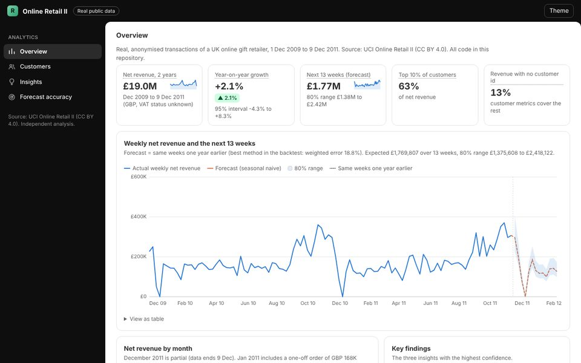

Retail · données réellesOnline Retail II : insights & prévisions
Pipeline reproductible sur ~1 million de lignes de transactions réelles (UCI) : nettoyage journalisé, segments RFM, cohortes, LTV, paniers, et prévisions dont la précision passée est mesurée par backtest.
Python, DuckDB, scikit-learn, statsmodels